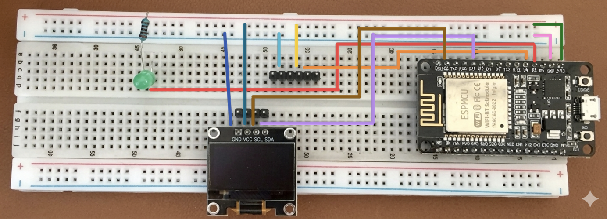

Arduino App - Analyze and Predict Temperature & Humidity
This section details the design and implementation of an embedded IoT system using ESP32 and DHT11 sensor to acquire and process real-time environmental data, visualize it on an OLED display, and trigger LED indicators based on temperature thresholds.

Figure 1: Arduino setup with ESP32, DHT11 sensor, OLED display, and LED indicators.